Unsupervised Landmark Learning
by Jung Jaeeun
*1. Unsupervised Learning of Object Landmarks through Conditional Image Generation
Task: Generate the target image given the source image and the encoded target image.
Method
Heatmaps bottleneck
$\Phi(x)$: learn to extract keypoint-like structures
$S_{u}(x;k)$: K heatmaps => $u_{k}^{*}(x) = \frac{\sum ue^{S_{u}(x;k)}}{\sum e^{S_{u}(x;k)}}$ (spatial softmax)
$\Phi_{u}(x;k)$: Gaussian-like function centered at $u_{k}^{*}$
Generator: Perceptual Loss
$\mathcal{L}(x’, \hat{x’}) = \sum_{l} \alpha_{l} \vert\vert\Gamma_{l}(x’)-\Gamma_{l}(\hat{x’})\vert\vert^{2}$: perceptual loss
Overall Architecture
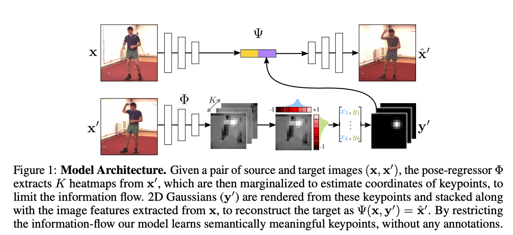
Summary
By using K-heatmaps as a bottleneck having keypoints information and exploiting training method of conditional image generation, this paper achieved SOTA results of landmark detection
*2. Unsupervised Landmark Learning from unpaired data
Task: Reconstructing images with the apprearance and pose originated from different images and establish various consistencies among these reconstructed images
Method
Cross-Image cycle Consistency Framework
Given $I_{i}, I_{j}$: pair of images
$\mathbf {a_{i}} = E_{a}(N(I_{i})), \mathbf {a_{j}} = E_{a}(N(I_{j}))$
$\mathbf {p_{i}} = E_{p}(N(I_{i})), \mathbf {p_{j}} = E_{p}(N(I_{j}))$
$I_{i, j} = D(\mathbf {a_{i}}, \mathbf {p_{j}}), I_{j, i} = D(\mathbf {a_{j}}, \mathbf {p_{i}})$
$\mathbf {a_{i}}’ = E_{a}(N(I_{i, j})), \mathbf {a_{j}}’ = E_{a}(N(I_{j, i}))$
$\mathbf {p_{i}}’ = E_{p}(N(I_{i,j})), \mathbf {p_{j}}’ = E_{p}(N(I_{j,i}))$
$I_{i, j}’ = D(\mathbf {a_{i}}’, \mathbf {p_{j}}’), I_{j, i}’ = D(\mathbf {a_{j}}’, \mathbf {p_{i}}’)$
$\mathcal{L_{cycle}} = \mathcal{P}(I_{i}, I_{i}’)+\mathcal{P}(I_{j}, I_{j}’)$: P is perceptual loss implemented by VGG network
$\mathcal{L_{inv}} = \vert\vert\mathbf {p_{i}}’ - \mathbf{p_{i}}\vert\vert ^ {2} + \vert\vert\mathbf {p_{j}}’ - \mathbf{p_{j}}\vert\vert ^ {2}$
Regularization via Cross-Image Flow Module
$T^{i \rightarrow j}$: the location correspondences
$\mathbf{C}$: 4D tensor containing the element-wise cosine similiarity between two feature maps($\mathbf {f_{i}}’, \mathbf {f_{j}}’$)
$\hat{C} = \mathbf {W_{1}} \bigotimes (\mathbf {W_{2}} \bigotimes \mathbf {C})$: 4D convolution using 2D convolutions consequently
$S^{i \rightarrow j}(x_{j}, y_{j}) = softmax(\hat{\mathbf{C}}(*, *, x_{j}, y_{j}))$
$T^{i \rightarrow j}(x_{j}, y_{j}) = argmax_{(x_{i}, y_{i})}S^{i \rightarrow j}(x_{j}, y_{j})$ (vice versa for j->i)
Thus, transformation maps can reflect the semantic correlations between landmarks of two images.
$\mathcal{L_{equiv}} = \vert\vert\mathbf {p_{i}} - T^{j \rightarrow i}\circ\mathbf{p_{j}}\vert\vert ^ {2}+\vert\vert\mathbf {p_{j}} - T^{i \rightarrow j}\circ\mathbf{p_{i}}\vert\vert ^ {2}$
Final Loss: $\mathcal{L_{total}}=\lambda_{cycle}\mathcal{L_{cycle}}+\lambda_{equiv}\mathcal{L_{equiv}}+\lambda_{inv}\mathcal{L_{inv}}$
Overall Architecture
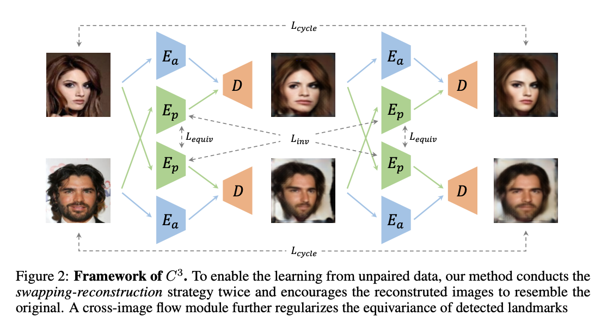
Summary
Through techinique of balancing losses which can be categorized into meaningful embedding/invariance/equivariance, unpaired images can be used to locate landmarks
*3. Unsupervised Part-Based Disentangling of Object Shape and Appearance
Method
Part-based Representation
- part based factorization of representation: $\phi(x) := (\phi_{1}(x), \phi_{2}(x), …)^{\top}$ where $\phi_{i}(x)$ can be decomposed as $[\alpha_{i}(x), \sigma_{i}(x)]$
Invariance and Equivariance
- invariance: $i)\alpha_{i}(x \circ s)=\alpha_{i}(x)$, $ii)\sigma_{i}(a(x))=\sigma_{i}(x)$ => $\mathcal {L_{rec}} = \vert\vert x - D([\alpha_{i=1,…}(x), \sigma_{i=1,…}(x)]) \vert\vert_{1}$
- equivariance: $\sigma_{i}(x \circ s) = \sigma_{i}(x) \circ s$ => $\mathcal {L_{equiv}} = \sum_{i} \lambda_{\mu} \vert\vert \mu[\sigma_{i}(x \circ s)] - \mu[\sigma_{i}(a(x))\circ s]\vert\vert_{2} + \lambda_{\sum} \vert\vert \sum[\sigma_{i}(x \circ s)] - \sum[\sigma_{i}(a(x))\circ s]\vert\vert_{1}$
- total loss: $\mathcal {L} = \mathcal {L_{rec}} + \mathcal {L_{equiv}}$
Overall Architecture
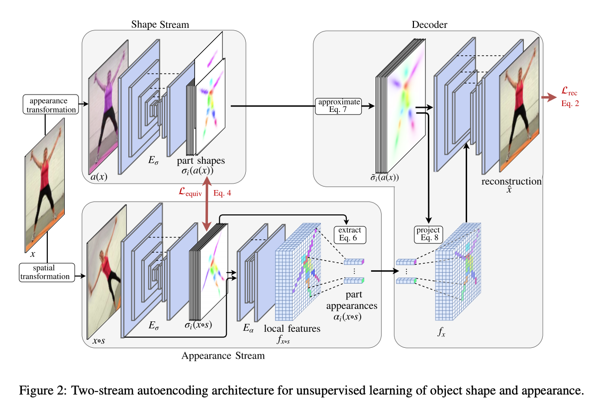
where $f$ denotes localized image encoding
Summary
To sum up, shape stream extracts part shapes which are independent from appreances and appreance stream does same thing as well except it re-encodes part appearances using local features. In decoder, reconstruction is done by using approximate part shapes(normalized) and part appreances weighted on part shapes
*4. Self-supervised Learning of Interpretable Keypoints from Unlabelled Videos
Task: Recognizing the pose of objects from a single image that for learning uses only unlabelled videos and a weak empirical prior on the objects poses
Method
- ${y} = \Phi({x})$: pose extracted from image
- $\Psi(\Phi(x), x’)$: conditional decoder network
Dual representation of pose & bottleneck
- $\mathbf{p} = (p_{1}, …, p_{K})$: a vector of K 2D keypoint coordinates trained by $\eta(\mathbf {y})$
- $y* = \beta(\mathbf{p})_{u}$: a distance field from line segments that forms the skeleton image
- $x=\Psi(\beta \circ \eta \circ \Phi(x), x’)$: so as to prevent cheating by exploting dual representation
Loss
- $\mathcal{L_{perc}}=\frac{1}{N}\sum_{i=1}^{N}{\vert\vert \Gamma(\hat{x_{i}}) - \Gamma(x_{i}) \vert\vert ^ {2}}$: Auto-encoding loss implemented by perceptual loss
- $\mathcal{L_{disc}}(D) = \frac{1}{M}\sum_{j=1}^{M} D(\bar{y_{j}})^{2} + \frac{1}{N}\sum_{i=1}^{N}{(1-D(y_{i}))^{2}}$: Difference adversarial loss to match $p(y)\approx q(y)$, encourages the images $y$ ro be ‘skeleton-like’
- $\mathcal{L}(\Phi, \Psi, D) = \lambda_{disc}\mathcal{L_{disc}}(D)+\mathcal{L_{perc}}(\Psi, \Phi)$: Total Loss, minimized w.r.t $\Phi, \Psi$ and maximised w.r.t $D$
Overall Architecture
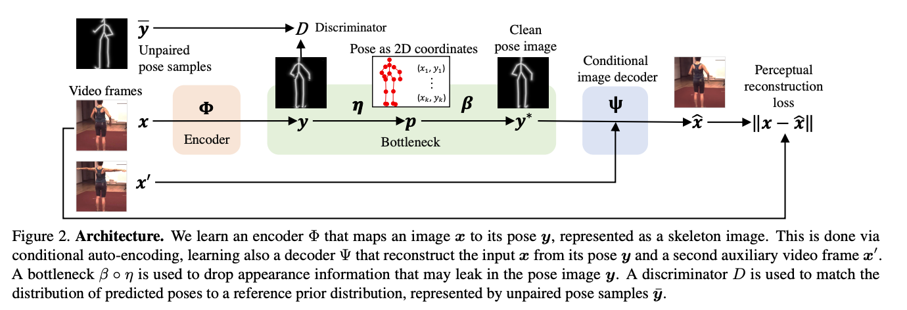
Summary
While using conditional image generator as a decoder, the method utilized in this paper forces encoder to grab meaningful pose information by exploiting dual representation and empirical prior
5. Unsupervised Learning of Landmarks by Descriptor Vector Exchange
Method
- equivariance constraint: $\Phi_{u}(x) = \Phi_{gu}(x) \text{ where } \Phi \text{ correspondes to dense embedding}$
- probabilistic formulation: $p(v \vert u;\Phi, x, x’)= \frac{e^{<\Phi_{u}(x), \Phi_{v}(x)>}}{\int_{\Omega} e^{<\Phi_{u}(x), \Phi_{t}(x)>}dt}$
- $\mathcal {L}(\Phi;x, x’, g) = E_{u, v}[\vert\vert v - gu \vert\vert]$
Vector exchangeability
- $x_{\alpha}$: auxiliary image that belongs to same-category in $u, v$
- $\hat {\Phi_{u}(x\vert x_{\alpha})} = \int \Phi_{w}(x_{\alpha})p(w \vert u; \Phi, x, x_{\alpha})dw$
- new probabilistic formulation: $p(v \vert u;\Phi, x, x’)= \frac{e^{<\hat{\Phi_{u}}(x), \Phi_{v}(x)>}}{\int_{\Omega} e^{<\hat{\Phi_{u}}(x), \Phi_{t}(x)>}dt}$
Overall Architecture
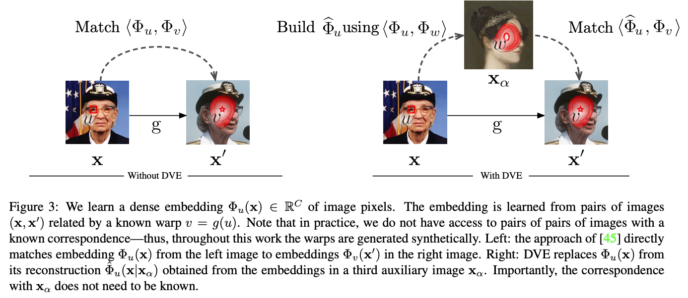
Summary
DVE captures dense embedding of an image which acts as an invariant descriptor vector by enforcing it’s robustness via intra-class variants(auxiliary images), in which it learns equivariance and intra-class invariance simultaneously
6. Unsupervised Learning of Facial Landmarks based on Inter-Intra Subject Consistencies
Method
- Landmark Detector: using visual feature maps $S \in \mathbf{R}^{H \times W \times K}$,
the predicted $k$-th landmark location $u_{k}$ is weighted average of the spatial locations $i$
$\Phi_{H}(x;k) = \exp(-\frac{1}{2\sigma^{2}} \vert\vert u-u_{k} \vert\vert ^ {2})$: Gaussian-like probabilistic heatmap centered at $u_{k}$ - Inter-Intra Image Generator
- $x’, x^{a}$: deformed image, auxiliary image
- $\mathcal {F_{s}} = \Phi_{E}(x) \in \mathbf {R^{H \times W \times D}}$: a visual feature map
- $\mathcal {I_{a}} = \Psi(\mathcal {F_{s}}, \Phi_{H}(x^{a})) = \Psi(\Phi_{E}(x), \Phi_{H}(x^{a}))$
- $\mathcal {I} = \Psi(\mathcal {F_{t}}, \Phi_{H}(x’)) = \Psi(\Phi_{E}(\mathcal {I_{a}}), \Phi_{H}(x’))$
- Cycle Backward Path: both $X$ and $X’$ are reconstructed through it’s counterpart
Training
- reconstruction loss: $\mathcal {L_{R}}(\mathcal{I}, \mathcal{I_{gt}}) = \vert\vert \mathcal{I}-\mathcal{I_{gt}} \vert\vert ^{2}$
- perceptual loss: $\mathcal {L_{P}}(\mathcal{I}, \mathcal{I_{gt}}) = \sum_{l} \vert\vert VGG^{l}(\mathcal{I}) - VGG^{l}(\mathcal{I_{gt}})\vert\vert ^ {2}$
- total loss: $\mathcal{L} = \mathcal{L_{R}}(\mathcal{I_{x}}, x)+\mathcal{L_{R}}(\mathcal{I_{x’}}, x’)+\mathcal{L_{P}}(\mathcal{I_{x}}, x)+\mathcal{L_{P}}(\mathcal{I_{x’}}, x’)$
Overall Architecture
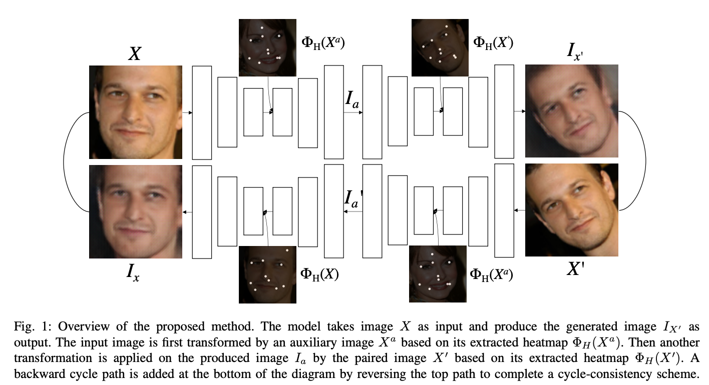
Summary
By inserting auxiliary image’s structure when reconstructing the target image, this method gives the model intra-subject consistency and reinforeces inter-subject consistency via cycle backward path
7. Unsupervised Disentanglement of Pose, Appearance and Background from Images and Videos
*8. Unsupervised Discovery of Object Landmarks via Contrastive Learning
Method
Contrastive learning
The goal is to learn: $\langle\Phi(x), \Phi(x’)\rangle \gg \langle\Phi(x), \Phi(z)\rangle$
Traditional methods
- Equivariant learning: enforces model to be robust to geometric/photometric transformations
- Invariant learning: encourages the representations to be invariant to transformations while being distinctive across images
- Trade off: Equivariant learning makes model to be less deeper(due to pooling operation), while invariant learning makes model to be more deeper(to capture more sophisticated features).
Novel approach: incorporating 1, 2
- $\mathcal{L_{NCE}} = -log\frac{\exp{(\langle \Phi(x), \Phi(x’) \rangle)}}{\sum_{i=1}^{N}\exp{(\langle \Phi(x), \Phi(x_{i}) \rangle)}}$
- Hypercolumns: $\Phi_{u}(x) = \Phi_{u}^{k_{1}}(x) \bigoplus \Phi_{u}^{k_{2}}(x) … \bigoplus \Phi_{u}^{k_{n}}(x)$
Overall Architecture
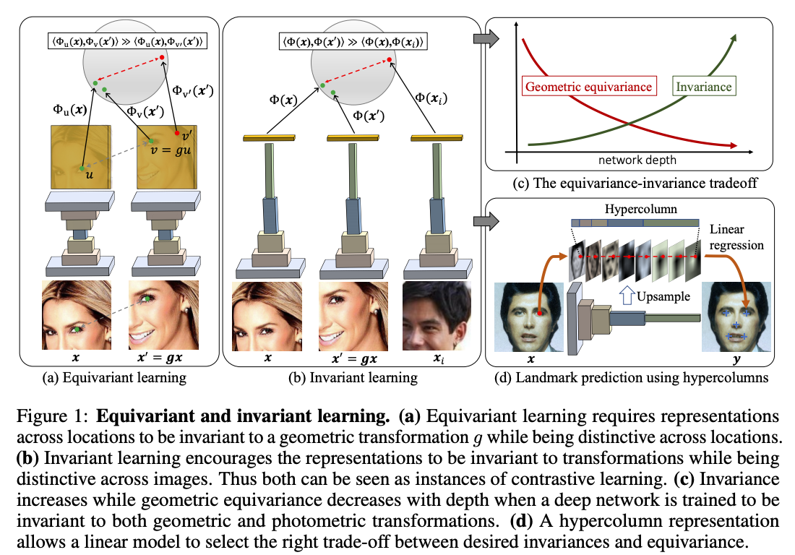
Summary
In contrast to traditional approach that can be categorized into equivariant/invariant learning, the method used in this paper incorporates both approachs by using contrastive learning technique. To be specific, it trains invariant representations using constrastive learning and then extracts hypercolumn representation to detect landmarks.
9. BRULÉ: Barycenter-Regularized Unsupervised Landmark Extraction
*10. Unsupervised learning of object frames by dense equivariant image labelling
Method
- invariant constraint: $\Phi(\mathbb{x}, u) = \Phi(g\mathbb{x}, gu)$
Motivated by invariant constraints, the similarity $\langle \Phi(\mathbb{x}, u), \Phi(\mathbb{x’}, gu)\rangle$ should be larger than the similarity $\langle \Phi(\mathbb{x}, u), \Phi(\mathbb{x’}, v)\rangle$ where $g$ is an arbitrary optical flow module.
Loss
- $\mathcal{L_{\log}}(\Phi \vert \mathbb{x}, \mathbb{x’}, g) = -\frac{1}{HW}\sum_{u}\log p(gu \vert u; \mathbb{x}, \mathbb{x’}, \Phi)$
- $\mathcal{L_{\text{dist}}}(\Phi \vert \mathbb{x}, \mathbb{x’}, g) = \frac{1}{HW}\sum_{u}\sum_{v} \vert\vert v-gu \vert\vert_{2}^{\gamma} p(v \vert u; \mathbb{x}, \mathbb{x’}, \Phi)$
Overall Architecture
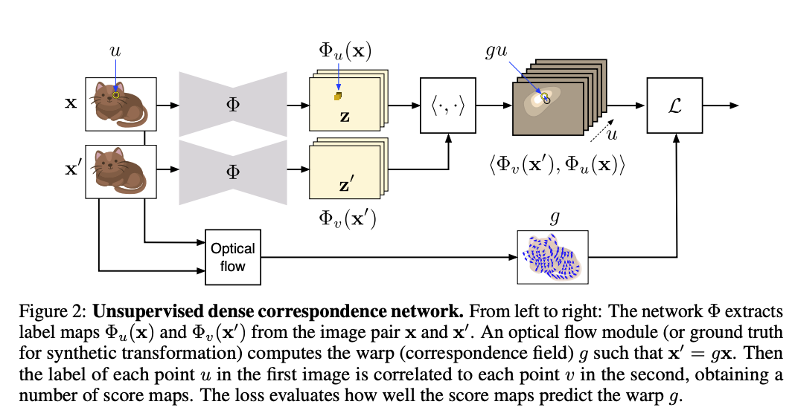
*11. Unsupervised learning of object landmarks by factorized spatial embeddings
Method
Deformable objects: Equivariance
$\forall r \in S_{0} : \Phi(r;\mathbb{x} \circ g) = g(\Phi(r;\mathbb{x}))$
Semantically consistent network
- $\Psi(\mathbb{x}) \in \mathbb{R^{H \times W \times K}}$: score maps
- $p(u \vert \mathbb{x}, r) = \frac{e ^ {\Psi(\mathbb{x})}}{\sum_{v} e^{\Psi(\mathbb{x})}}$
- $u_{r}^{*} = \sum_{u} up(u \vert \mathbb{x}, r)$
=> $\mathcal{L_{align}} = \frac{1}{K}\sum_{r=1}^{K}\sum_{uv} \vert\vert u-g(v) \vert\vert ^ {2}p(u \vert \mathbb{x}, r)p(v \vert \mathbb{x’}, r)$
Diversity Loss: penalize the mutual overlap
- $\mathcal{L_{div}}(x) = \frac{1}{K^{2}} \sum_{r=1}^{K}\sum_{r’=1}^{K} \sum_{u}p(u \vert \mathbb{x}, r)p(u \vert \mathbb{x}, r’)$
- $\mathcal{L_{div}’}(x)=K - \sum_{u} \max_{r=1,…,K}\sum_{\delta_{u}}p(mu+\delta_{u} \vert \mathbb{x}, r)$: $m \times m$ sum pooling
Total Loss
$\mathcal{L_{total}} = \lambda\mathcal{R}(\Psi) + \frac{1}{N} \sum_{i=1}^{N}\mathcal{L_{align}’}(\mathbb{x}, \mathbb{x_{i}}, g_{i};\Psi) + \gamma \mathcal{L_{div}’’}(\mathbb{x_{i}};\Psi) + \gamma \mathcal{L_{div}’’}(\mathbb{x’_{i}};\Psi)$
Overall Architecture
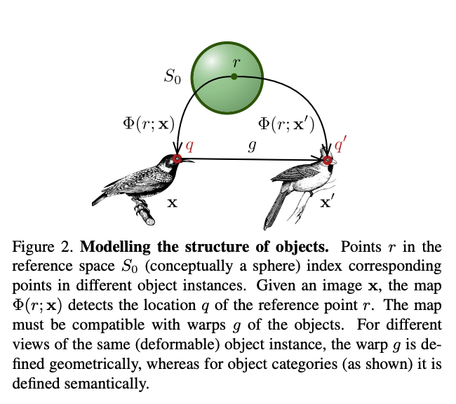
Summary
By factorzing deformations, we can learn intrinsic reference frame for the object
12. Deforming Autoencoders: Unsupervised Disentangling of Shape and Appearance
13. Self-supervised learning of a facial attribute embedding from video
Method
Multi-source frames architecture: predicting a confidence heatmap
Curriculum Strategy: stop training when samples fall into 90th-100th percentile range.
Overall Architecture
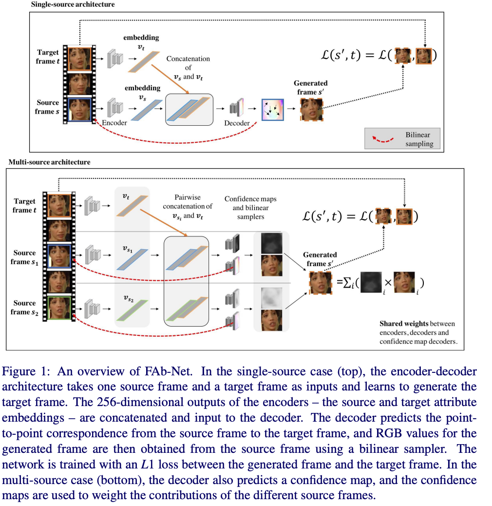
*14. Unsupervised Discovery of Object Landmarks as Structural Representations
Method
Architecture of landmark detector
- $\mathbf{R} = hourglass_{l}(\mathbf{I};\theta_{l}) \in \mathbb{R}^{W \times H \times(K+1)}$: raw detection score map
- $\mathbf{D_{k}}(u,v)$: normalized $\mathbf{R}$ across the channels => Taking $\mathbf{D_{k}}$ as a weighting map, $(x_{k}, y_{k})$ is the $k$-th landmark
- $l = [x_{1}, y_{1}, …, x_{k}, y_{k}]^{\top} = \text{landmark}(\mathbf{I};\theta_{l})$
Visual concept of landmarks
- Concentration constraint: $\mathcal{L_{conc}} = 2\pi e (\sigma_{det, u}^{2}, \sigma_{det, v}^{2})$
=> $\bar{D_{k}}(u, v)=(1/WH)\mathcal{N}((u, v);(x_{k}, y_{k}), \sigma_{det}^{2}\mathbb{I})$
-
Separation constraint: $\mathcal{L_{sep}} = \sum_{k \neq k’}^{1, …, K}\exp(-\frac{\vert\vert (x_{k’}, y_{k’}) - (x_{k}, y_{k}) \vert\vert ^{2}}{2\sigma_{sep}^{2}})$
-
Equivariance constarint: $\mathcal{L_{equiv}} = \sum_{k=1}^{K} \vert\vert g(x_{k}’, y_{k}’) - (x_{k}, y_{k}) \vert\vert ^ {2}$
Local latent descriptors
$\mathbf{F} = hourglass_{f}(\mathbf{I};\theta_{f}) \in \mathbb{R}^{W \times H \times S}$
Then take $\mathbf{f_{k}}$ as inner product of $\bar{D_{k}}(u, v), \mathbf{F}(u, v)$ multiplied by landmark-specific operator $\mathbf{W_{k}}$
Landmark-based decoder
Total Loss: $\lambda_{recon}L_{recon}+\lambda_{conc}L_{conc}+\lambda_{sep}L_{sep}+\lambda_{equiv}L_{equiv}$
Overall Architecture
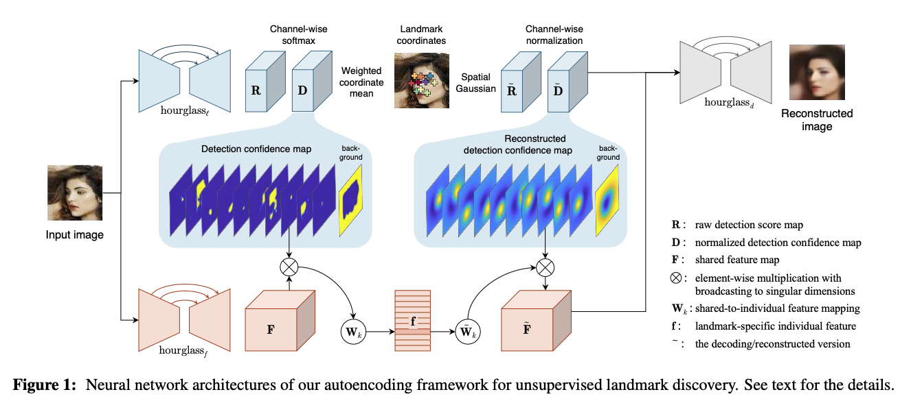
15. Cross-domain Correspondence Learning for Exemplar-based Image Translation
Subscribe via RSS